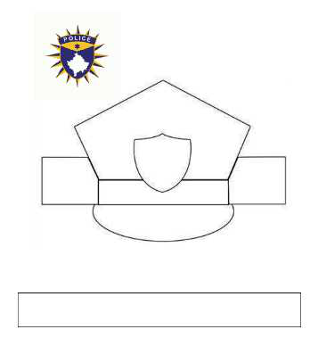

TEMATIKA 2: KARRIERA IME1. Dita e Dielli bisedojnë për profesionet
Puno në shtëpi
Ndihmë: si të punoj?
Kjo veprimtari bëhet me duar. Nëse e ke të vështirë të vizatosh ose të presësh, kërkoji një të rrituri të t’i përgatitë pjesët. Ti mund t’i prekësh, t’i palosësh dhe t’i ngjitësh.
1.
Me ndihmën e me të rriturve, bëj një kapelë që i përshtatet profesionit që të pëlqen.
Një model i kapelës së policit të Kosovës është dhënë këtu. Modele të ngjashme mund të gjesh dhe të punosh duke kërkuar në internet, i ndihmuar nga një i rritur kujdestar.
